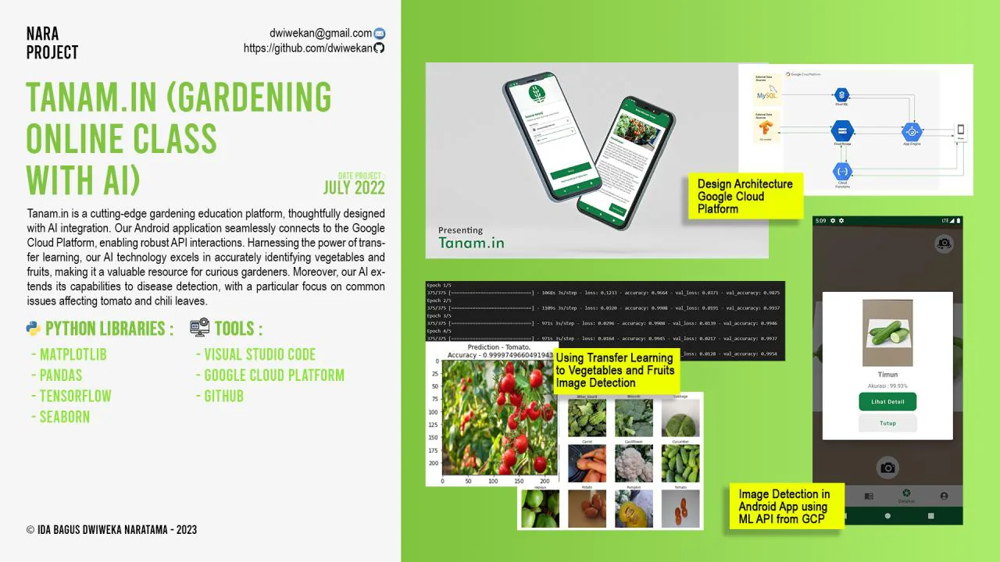

Team project, Udayana University
Tanam.in, a Gardening App with Plant Recognition
Android gardening-education app on Google Cloud. Transfer-learning models identify vegetables and fruits and detect tomato and chili leaf diseases.
- Role
- Machine learning
- When
- Jul 2022
- Where
- Team project, Udayana University
Overview
Tanam.in is a gardening education platform with AI features. The Android application connects to APIs on Google Cloud Platform. Transfer-learning models identify vegetables and fruits, and detect common diseases on tomato and chili leaves.
